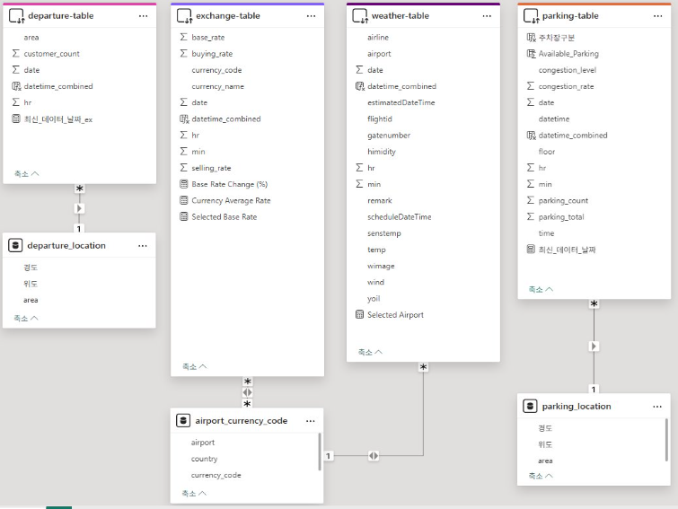
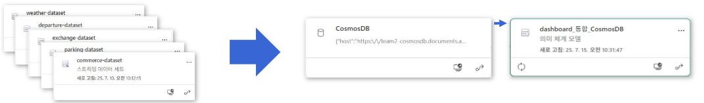
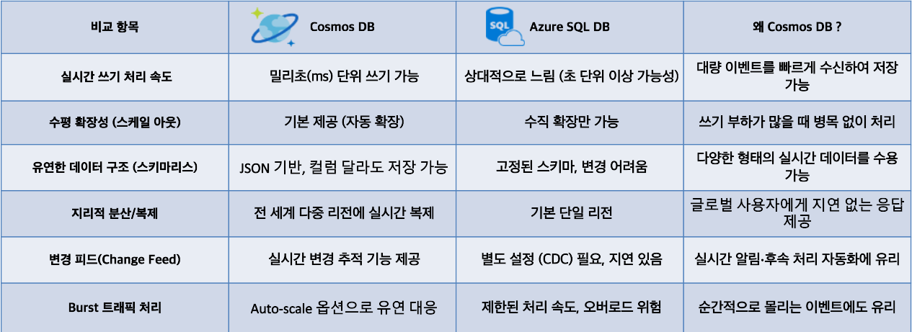

프로젝트 목표
공항 이용객들이 출국 전에 마주하는 다양한 문제들(길 찾기, 주차, 빠른 출국장 등)을 다양한 환경에서 다양한 서비스로 해결 할 수 있는 올인원 서비스를 제공함으로써 문제를 해결하자는 목표
프로젝트 배경
국제공항은 매일 수십만 명의 이용객이 오가는 복잡한 공간입니다. 이용객들은 이동 동선의 혼잡, 주차 공간 부족, 출국장 대기 시간, 시설 이용 불편 등 다양한 문제를 경험합니다. 특히 가족 단위 여행객이나 출장객처럼 시간과 편의성이 중요한 집단은 이러한 문제로 더 큰 불편을 겪습니다. 따라서 데이터를 기반으로 실시간 안내와 맞춤형 서비스를 제공하는 통합 플랫폼이 필요하다는 배경에서 이 프로젝트를 시작했습니다.
프로젝트 필요성
한국항공협회에 따르면 인천공항 이용객들이 활성화가 필요하다고 느끼는 요소 중 40%가 교통, 대기시간, 편의시설 개선이었습니다. 실제로 팀원들과 주변 사람들도 이런 불편함을 겪고 있는 것을 확인했습니다.

출처: 한국항공협회
실제 저희가 진행한 사용자 설문조사에서도 같은 결과를 확인할 수 있었습니다. 오른쪽 워드클라우드를 보시면 안내, 편의시설, 서비스, 길, 찾기가 크게 표시되고 있습니다.

Google Forms를 통한 설문
설문 문항 구성
- 성별, 연령, 성격유형
- 공항 이용 목적, 빈도, 동행자, 목적지, 계절
- 탑승 몇 시간 전 도착, 주로 하는 일(쇼핑, 식사, 카페 등)
- 주차장, 안내센터 이용 빈도, 텍스트 vs 시각자료 선호도

팀원 구성 및 역할
- 김시온 : 데이터 수집, 파이프라인, Power BI, Azure ML, 챗봇 서비스(RAG)
- 김동현 : 데이터 수집, 길찾기 서비스 구현, 지연 항공편 서비스 구현
- 박명균 : 데이터 수집, Power BI, ML, UI/UX
- 심형은 : 데이터 수집, ML, 서비스 기획, 사용자 분석
- 오민석 : 데이터 수집, 챗봇 서비스 구현, 테스트 및 디버깅, UI/UX
- 정민철 : 데이터 수집, Power BI, ML
전체 파이프라인

데이터 수집
공공데이터포털을 통해 총 5가지 데이터를 API를 통해 수집했습니다.
- 인천공항의 실시간 주차장 현황
- 상업시설 안내
- 항공편 및 기상 정보
- 출국장 혼잡도 데이터
- 한국수출입은행 환율 정보
각 데이터의 특성과 변동 주기를 고려하여 수집 주기를 다르게 설정했고, Azure Functions의 Timer trigger를 활용해 자동 수집과 주기적인 실행을 효율적으로 관리했습니다. 또한 Google Forms를 통하여 약 300건의 이용객 불편사항 데이터를 수집했습니다.
데이터 전처리

Azure Functions을 통하여 수집된 데이터들은 Event Hub로 전달되어 실시간 입력을 감지합니다. 이후 Azure Stream Analytics에서 해당 데이터를 받아 결측치, 이상치 처리, 파생 컬럼 생성, 정규화, 범주형 데이터 처리 등을 통해 실시간 전처리를 수행하고 Azure Cosmos DB에 저장합니다.

Cosmos DB의 Change Feed 기능을 통해 데이터 변경 시 Azure Function이 트리거되고, 데이터는 임베딩 함수를 통해 Azure OpenAI text-embedding-3-small 모델로 벡터화되어 DiskANN 인덱싱 후 Cosmos DB에 업데이트됩니다.
데이터 분석
1. 설문 데이터 분석
Azure ML에서 설문 데이터를 기반으로 K-means 알고리즘을 적용해 3개의 클러스터로 분류했습니다.
- Cluster 0: 남성 100%, 출장/환승 58%, 주차 사용 최다
- Cluster 1: 여성 100%, 가족/친구 동행 42%, 유럽권 29%
- Cluster 2: 여행 목적 98%, 남:여 7:3, 동북아 58%

이를 기반으로 페르소나를 정의하여 서비스 기획을 진행했습니다.
- 시간 효율 중시 출장러 → 지연 항공 알림, 최적 경로 안내, 주차장 정보
- 케어 안심형 여행자 → 챗봇+음성 입력, 공항 대시보드
- 찍고 공유하는 탐험가 → 챗봇+외국어 기능, 포토존·맛집 추천
2. 인천공항 데이터 기반 검증
실시간 주차장 현황 데이터를 통해 T1 단기 주차장 1·2층은 하루 82% 이상 만석, 반면 3층 및 주차타워는 비교적 여유가 있음을 확인 → 실시간 주차 확인 서비스 제공
실시간 항공편 및 기상 데이터 분석 결과 전체 항공편의 32%가 지연 → 챗봇을 통한 지연 항공편 모니터링 서비스 기획
서비스
서비스 1. AI 챗봇

Cosmos DB에 벡터 임베딩 데이터를 저장하고 Azure OpenAI GPT-4.1-mini 모델을 활용하여 챗봇을 구현했습니다.

서비스 2. 데이터 리포트 (Power BI 대시보드)
출국 전 통합정보 페이지, 실시간 주차장 페이지, 다국어 지원 기능을 포함했습니다.
서비스 3. 공항 길찾기


서비스 4. 지연 항공 알림

실시간 항공편 데이터를 바탕으로 Azure Logic App과 Teams Webhook을 연동하여 알림을 제공합니다.
문제 상황 발생 및 해결
Power BI에서 다중 의미체계 미지원으로 Direct Query가 비활성화되는 문제가 발생했습니다. 이를 해결하기 위해 모든 테이블을 하나로 병합 후 Power BI 내부에서 분할하여 사용했습니다.
 Cosmos DB와 SQL DB 중 선택에서, 실시간성과 확장성이 중요한 특성 때문에 Cosmos DB를 선택했습니다.
기대 효과
본 프로젝트를 통해 공항 이용객은 맞춤형 안내와 실시간 서비스를 통해 불필요한 대기 시간을 줄이고 이동 효율성을 높일 수 있습니다. 또한 공항 운영 측면에서는 데이터 기반 관리와 서비스 개선으로 고객 만족도를 높이고 운영 효율성을 향상시킬 수 있습니다. 나아가, 공항 이용 경험 전반의 편의성을 개선해 글로벌 허브 공항으로서의 경쟁력을 강화할 수 있을 것입니다.